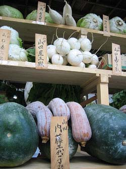
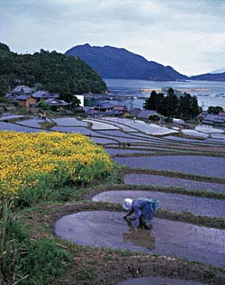

Introduction to Japanese IngredientsThat Japan is blessed with a bounty of fresh produce and seafood is due in part to its favorable location and remarkable geographical contours. Japan has four distinct seasons, including a long spring and fall, a hot summer, and relatively mild winters. Its four main islands stretch from north to south, varying its climactic conditions as well as extending its growing seasons. The waters around Japan contain a bounty of seafood, and both warm and cool currents glide along the shores, bringing a large variety of fish, kelp and shellfish; while mountain streams that trickle down from its vast mountain ranges hold a large variety of fresh water fish. This section contains background information on ingredients that may or may not be familiar to you. Where possible, I’ve added a bit of history, as well as nutritional information. Categories are listed to the left. I will add to this section as needed, and as I receive requests. To start, let's cover the basics. The Culture of RiceRice is so elemental to the soul of Japanese cooking that gohan, the word for rice, is synonymous with the word for meal. Indeed, the most basic meal consists of plain rice and soup, and the rest of the meal, okazu (things to go with rice) are considered to be added elements. Rice was used until modern times as currency, and is central to almost every Japanese festival and religious ceremony. Sake, which is made from rice, was thought to be a sacred liquid that had the ability to cleanse evil spirits. Sake has a close relationship with Shinto shrines, and the first brew from each region was, and still is, dedicated to the local Shinto shrine every year. Rice cultivation was also instrumental in developing Japan’s national character. Because its production is such a community effort (no one person could successfully manage it alone) cooperation and social unity were favored over individuality. And although modern Japan is light years away from its roots as a village farming society, these beliefs and qualities persist. Rice is considered so sacred that the emperor tends a small rice paddy within the grounds of the Imperial Palace, donning rubber boots to plant rice seedlings each June. Tea: Japan's Aesthetic LifeTea, or ocha, as it is called in Japan, forms the basis for Japan’s entire aesthetic life; painting, calligraphy, gardens, architecture, poetry, ikebana, ceramics, and cuisine all trace their roots to Sado, the “way of tea.” In fact, many aspects of Japanese culture can be said to have formed from the tea culture. |
|

Japan's bounty: Top: golden rice fields. Above: The autumn harvest festival at a Matsuo Taisha shrine in Kyoto

Photo credits: Top, rice paddies, and above, planting rice seedlings, courtesy of JNTO |